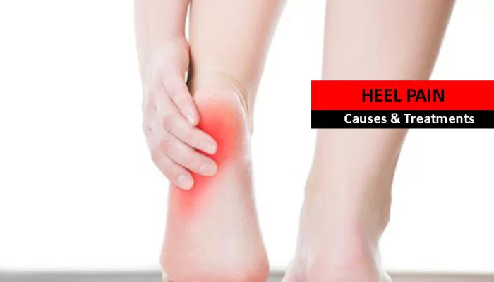

Heel Pain -Causes and Treatments
Heel pain is one of the most common ailments reported across the world. The main reason or cause of Heel pain is overuse or injury to the heel. The intensity of the pain can vary from faint to unbearable. This pain is associated with the heel bone, which is the largest of all the 26 bones in a human foot. Sometimes, the pain may ease off on its own without any treatment. However, at times it can persist for long.
Major Causes of Heel Pain.
The pain in the heels can be a cause of several factors. Here are some most common causes that can result in heel pain:
- Plantar Fasciitis: There is a ligament present in the feet, which are referred to as plantar fascia. It runs from the heel bone or calcaneum to the foot tip. If the arches of feet are too high, or low, then it leads to a stretched ligament. This further result in the inflammation of the soft tissue fibers, leading to pain under the heel.
- Achilles Tendinosis: This is another common cause of the pain. When the Achilles tendon undergoes progressive degeneration, it leads to the chronic condition – Achilles Tendinosis. This is also sometimes referred to as tendonitis, tendinopathy, or Tendinosis.
- Severs Disease: This is caused as a result of an inflammation of the growth plate in the heel. It is most commonly seen in children aged from 7 to 15 years.
- Tarsal Tunnel Syndrome (TTS): This condition arises when the tibial nerve passing through the tarsal tunnel gets compressed. It is also sometimes referred to as posterior tibial neuralgia.
- Stress Fracture: The stress fracture is a most commonly observed case with the runners. It occurs due to heavy manual work, vigorous exercise, or sports, and results in heel pain. Patients suffering from osteoporosis are the common victims of a stress fracture.
- Heel Bumps: This is the case when the heel bone rubs excessively on the floor before it is fully mature. People with flat foot are most likely to be a victim of heel bumps. It is also noticed in people who wear high heels.
- Heel Bursitis: Improper landing on the heels can lead to heel bursitis. A bursa is a sac filled with a fluid at the back side of the heel. Heel bursitis is also a result of the pressure exerted by footwear on the heel.
How to Avoid Heel Pain ?
Heel pain is an ailment, which can be prevented. You can avoid it by taking some precautions, such as:
- Body Weight Check: You need to ensure that you always monitor and maintain the body weight. Overweight people are more likely to get affected by this ailment. This is because the heavy weight of a person's body exerts pressure on the heels while walking.
- Proper Gear: When you go out for running, or for a walk, it is highly recommended to wear proper shoes of your size that fit well. Those people, who have high arches in their feet should avoid running barefoot, as it can give rise to the heel pain.
- Application of Ice: When you experience pain for the first time, apply ice to the bottom of your heels and feet.
What are the Treatments to Heal Your Heel pain?
The following are some treatments, which you can apply to ease the heel pain:
- Taking a non-steroidal anti-inflammatory (NSAIDS)
- Silicone gel
- Heel raise Exercise
- The best way to treat this pain is by taking a physiotherapy, which will help you stretch the Achilles tendon and plantar fascia. This will stabilize the heel and reduce the pain.
- Specialized injection therapies
- Topaz procedure is a minimally invasive, state of the art procedure used to treat chronic Achilles tendonitis and chronic plantar fasciitis.
- ESWT – Extracorporeal Shock Wave Therapy.
It is high time to see a doctor if you notice any of the following:
- Sudden Pain in the heel
- Swelling of the heel
- Severe Pain in the heel
- Redness in the heel
All the information given in the post above will not only help you understand everything about the heel pain, but also take necessary precaution, and treatment whenever the time comes. As said before, if the pain persists even after implementing several home remedies, then you should consult a doctor, who can suggest you some effective treatments and physiotherapy exercises, which will help you get rid of the heel pain.
If you are interested in finding more information to help your condition please find below the link to book an appointment.